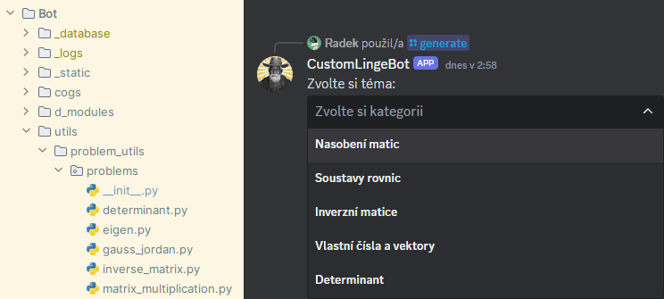
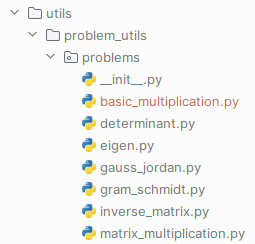
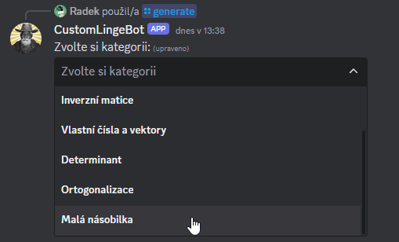
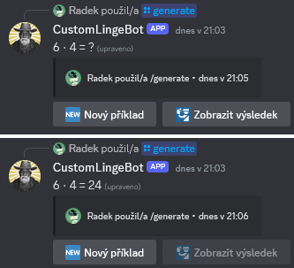
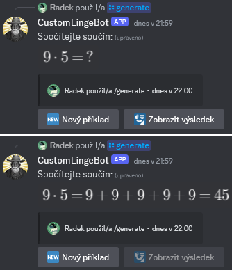
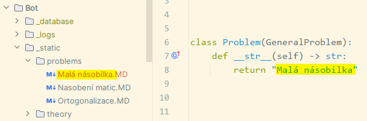
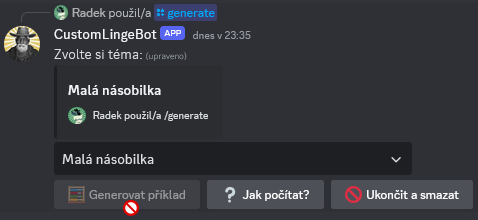

Vlastní kategorie příkladů
Tato sekce popisuje, jak do vlastní instance LingeBota přidat vlastní kategorie pro generaci příkladů. Vyžaduje se znalost programovacího jazyka Python.
Každá kategorie příkladů odpovídá jednomu modulu v balíku problems (kromě modulu __init__.py), který se nachází v podadresáři utils/problem_utils/:

Obsah modulů musí splňovat určitá pravidla a pro přidání kategorie do bota je ještě potřeba několik dalších kroků. Proto bude postup ukázán na jednoduchém příkladu, kdy je přidána kategorie pro malou násobilku:
[1] Vytvoření modulu
1.1. Vytvořte v balíku problems nový Python modul basic_multiplication.py. Jméno souboru nemá vliv na výsledný název kategorie.

1.2. V modulu naimportujte třídu GeneralProblem a definujte třídu Problem, která ze třídy GeneralProblem dědí.
1.3. Ve třídě Problem definujte magickou metodu __str__, která vrací řetězec Malá násobilka. Obsah řetězce určuje, jak se bude kategorie jmenovat.
1.4. Ve třídě Problem definujte metodu generate_problem a zatím ji nechte prázdnou.
from utils.problem_utils.problem_utils import GeneralProblem
class Problem(GeneralProblem):
def __str__(self) -> str:
return "Malá násobilka"
def generate_problem(self) -> None:
pass
[2] Zaregistrování modulu
2.1. Do kolekce __all__ v modulu __init__.py z balíku problems přidejte položku "basic_multiplication". Jedná se o řetězec obsahující název nově vytvořeného modulu. Na pořadí položek v kolekci nezáleží.
__all__ = [
"matrix_multiplication",
"gauss_jordan",
"inverse_matrix",
"eigen",
"determinant",
"gram_schmidt",
"basic_multiplication"
]
2.2 Do kolekce __problems_list__ v modulu utils/problem_utils/problem_manager.py přidejte položku basic_multiplication.Problem(). Jedná se o třídu definovanou v kroku 1. Pořadí položek v této kolekci určuje pořadí položek ve výběrovém seznamu po zadání příkazu /generate.
problems_list: list[GeneralProblem] = [
matrix_multiplication.Problem(),
gauss_jordan.Problem(),
inverse_matrix.Problem(),
eigen.Problem(),
determinant.Problem(),
gram_schmidt.Problem(),
basic_multiplication.Problem()
]
2.3. Kategorie je nyní vidět ve výběrovém seznamu a lze ji zvolit. Generování příkladů ale nic nedělá, protože tělo metody generate_problem je prázdné.

[3] Definice logiky generace příkladů
3.1. Vraťte se do modulu basic_multiplication.py z balíku problems.
3.2. V metodě generate_problem do proměnných self.task a self.answer uložte text zadání a text řešení vygenerovaného příkladu.
Pokud uživatel klikne na tlačítko 🧮 Generovat příklad nebo 🆕 Nový příklad, zavolá se metoda generate_problem a obsah řetězce self.task je zobrazen uživateli. Po kliknutí na tlačítko 🛂 Zobrazit výsledek se text zprávy změní na obsah řetězce self.answer.
Cílem je tedy uvnitř metody nejprve náhodně vygenerovat hodnoty pro příklad a ty pak v čitelné formě dosadit do zmíněných řetězců:
def generate_problem(self) -> None:
a = random.randint(1, 9)
b = random.randint(1, 9)
self.task = f"{a} ⋅ {b} = ?"
self.answer = f"{a} ⋅ {b} = {a * b}"
3.3. Nyní funguje generování příkladů a zobrazení výsledků.

Ve třídě lze definovat další pomocné metody, které se použijí v metodě generate_problem. Pokud chcete stejnou logiku používat ve více kategoriích, pak můžete definovat pomocné funkce v modulu utils/problem_utils/problem_utils.py.
Vykreslení matematických výrazů v rozhraní generátoru příkladů
Pokud se v řetězci self.task nebo self.answer za sebou nachází tři symboly dolaru $$$, vše za nimi je bráno jako matematický výraz, který je vykreslen. Zpětné lomítko je v jazyce Python únikovým znakem a je tedy potřeba ho v řetězci psát dvakrát – např. \\cdot namísto \cdot.
def generate_problem(self) -> None:
a = random.randint(1, 9)
b = random.randint(1, 9)
self.task = f"Spočítejte součin:$$${a}\\cdot{b}=?"
repeated_addition = "+".join(f"{a}" for _ in range(b))
self.answer = f"{self.task[:-1]}{repeated_addition}={a * b}"

Přidání tutoriálu pro výpočet příkladů
Obsah tutoriálu pro výpočet příkladů z určité kategorie je čten z Markdown souboru a odesílán do textového kanálu. Soubor se nachází v adresáři _static/problems/, jeho přípona musí být .MD (velkými písmeny) a jeho název musí být stejný jako název dané kategorie, který je definován v magické metodě __str__.

Tutoriálové Markdown soubory nejsou děleny na témata a podtémata jako u výkladu teorie. Do textového kanálu je po stisknutí tlačítka ❔ Jak počítat vždy odeslán celý obsah souboru.
Přidání kategorie příkladů pouze s tutoriálem bez možnosti generace
Pokud není k vybrané kategorii příkladů dostupný tutoriál pro výpočet, tlačítko ❔ Jak počítat je vypnuté. Pokud si přejete pro svou kategorii dodat pouze tutoriál pro výpočet bez možnosti generace příkladů, pak je možný i stav, kdy je vypnuté tlačítko pro generaci. Pro tento stav přidejte do třídy Problem metodu can_generate_problem, která vrací False.
from utils.problem_utils.problem_utils import GeneralProblem
class Problem(GeneralProblem):
def __str__(self) -> str:
return "Malá násobilka"
def can_generate_problem(self) -> bool:
return False
def generate_problem(self) -> None:
pass
